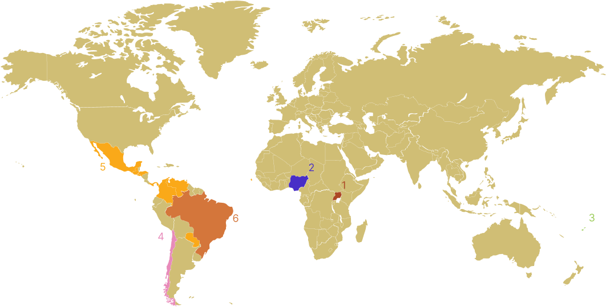
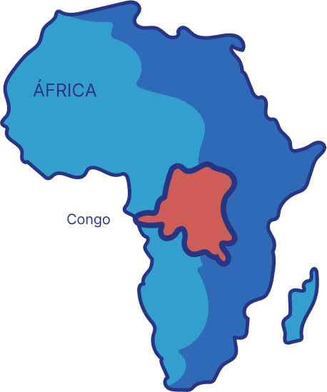
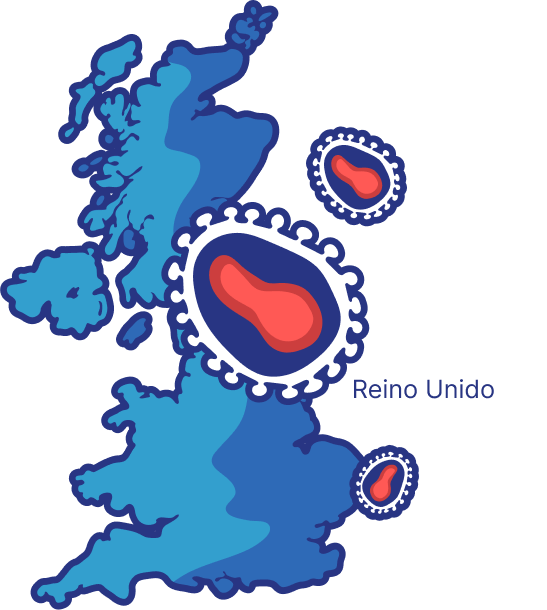
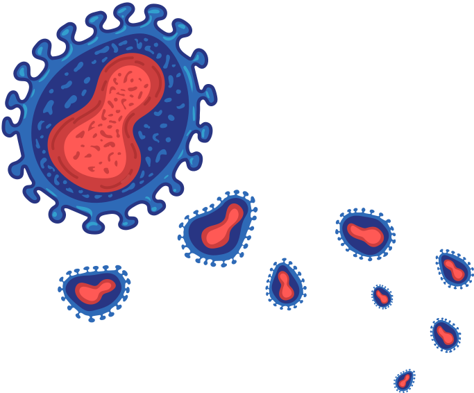
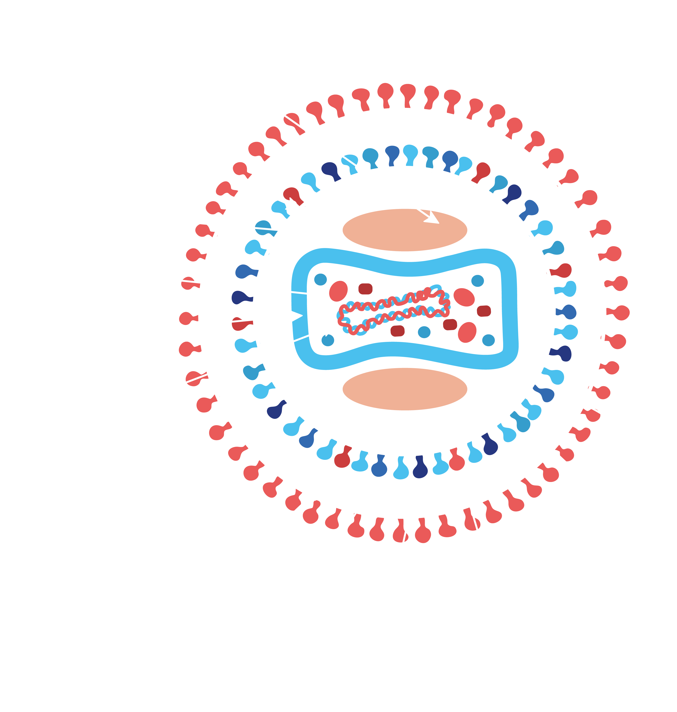
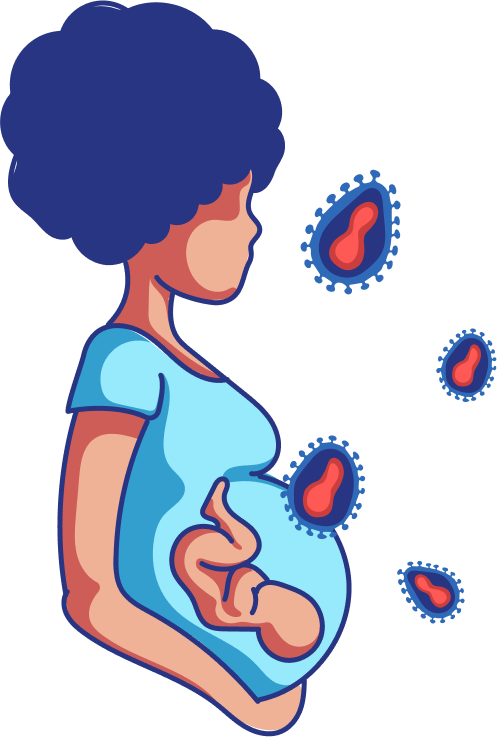
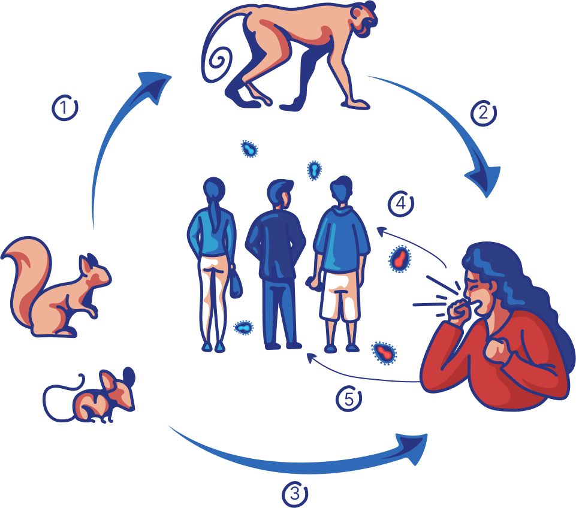
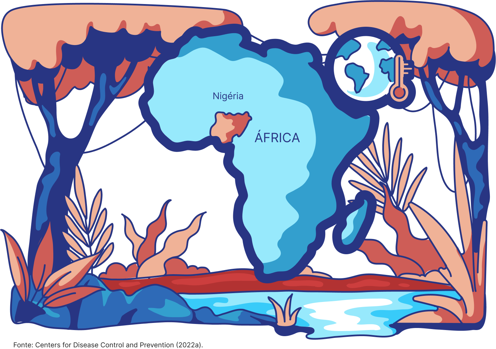

ABORDAGEM CLÍNICA DE
ABORDAGEM CLÍNICA DE 
SOBRE O MATERIAL
UNIDADE 01
ASPECTOS EPIDEMIOLÓGICOS, PROMOÇÃO À SAÚDE E PREVENÇÃO DE INFECÇÃO POR VÍRUS ZIKA

Distribuição da doença no mundo e no país
O primeiro isolamento do vírus Zika ocorreu em 1947, em sangue de macaco do gênero Rhesus e em mosquitos da espécie Aedes (Stegomyia) africanus na floresta de Zika, Uganda. Posteriormente, em 1954, foram identificados três casos de infecção em humanos durante uma epidemia na Nigéria. O vírus continuou dispersando-se, de forma esporádica para outras regiões, sendo evidenciados alguns surtos em diferentes países da África, da Ásia e Ilhas do Pacífico.
Em 2007, o vírus Zika emergiu pela primeira vez fora da África e da Ásia causando uma epidemia na Ilha de Yap (Micronésia) que infectou aproximadamente 70% dos moradores, seguida por uma grande epidemia na Polinésia Francesa, em 2013-2014. Subsequentemente, o vírus dispersou-se para outras ilhas do Pacífico.
Desde 2014, casos de circulação do vírus Zika foram detectados no continente Americano. Em fevereiro desse mesmo ano, as autoridades de saúde pública do Chile confirmaram o primeiro caso de transmissão indígena do vírus na Ilha de Easter; posteriormente, outros casos foram reportados. Mais recentemente, desde outubro de 2015, casos de infecção pelo vírus Zika foram confirmados no México, Paraguai, Guatemala, El Salvador, Colômbia, Panamá, Honduras, Ilha de Santiago, Cabo Verde e na Venezuela.
No Brasil, casos de uma doença exantemática foram reportados desde o final de 2014 e, no começo do ano de 2015, pacientes da cidade de Natal, estado de Rio Grande do Norte, apresentaram sintomas compatíveis com a febre da dengue. Neste mesmo ano, foram identificados os primeiros casos do vírus Zika em amostras de soro de pacientes da cidade de Natal (estado de Rio Grande do Norte) e de Camaçari (Bahia), neste último com cocirculação de dengue e chikungunya. As análises filogenéticas dos isolados demonstraram 99% de identidade com a linhagem asiática, reportada em epidemias das Ilhas do Pacífico.

Fonte: Universidade de Lancaster, Journal of General Virology
Até aquele momento, os efeitos do vírus à saúde não eram bem conhecidos.
No segundo semestre de 2015, alguns estados do Nordeste do Brasil, sobretudo Pernambuco, notificaram ao
Ministério da Saúde o aumento do número de casos de microcefalia neonatal. Com o aumento expressivo dos
casos de microcefalia, cuja etiologia ainda era desconhecida, o Ministério da Saúde então declarou, em
novembro do mesmo ano, Emergência em Saúde Pública de Importância Nacional (ESPIN) e notificou o fato à
Organização Pan-Americana da Saúde (Opas) /Organização Mundial da Saúde (OMS).
Em 1º de fevereiro de 2016, a OMS declarou Emergência de Saúde Pública de Importância Internacional
(ESPII), sob os aspectos do Regulamento Sanitário Internacional (RSI). Ainda, no mesmo ano evidências
produzidas no âmbito dos dados e achados da vigilância epidemiológica, agregadas a resultados de estudos
clínicos e laboratoriais e análise de revisões sistemáticas, possibilitaram comprovar que a infecção
pelo vírus Zika (ZIKV) em gestantes causava microcefalia e outras malformações congênitas.
A resposta a essa emergência no Brasil ocorreu em diversas frentes básicas, envolvendo os setores de
saúde, educação e desenvolvimento social, entre outros. Houve mobilização e combate ao vetor, centrados
na vigilância epidemiológica, articulada nos três níveis de governo. Atreladas ao combate ao vetor,
campanhas publicitárias e educativas de sensibilização da população foram amplamente divulgadas; por
fim, houve o desenvolvimento de protocolos e diretrizes para diagnóstico e tratamento, bem como o
cuidado com a organização da rede de atendimento e capacitação de recursos humanos, com base nas
evidências científicas disponibilizadas. Assim, em maio de 2017, a partir da diminuição do número de
casos de microcefalia, teve o fim da ESPIN no Brasil.
Atualmente, a circulação do ZIKV no Brasil é observada em todas as regiões, com predominância do
Nordeste, seguido das regiões Sudeste, Centro-Oeste, Norte e Sul.
LINHA DO TEMPO

1958
O vírus foi identificado em 1958, em duas colônias de macacos provenientes da África, e mantidas para pesquisa na Dinamarca.
1970 A 1979
O primeiro caso humano foi identificado em 1970 na República Democrática do Congo, na África. Desde então, apresenta-se como doença endêmica no continente africano, com poucos casos e baixa letalidade.
Entre 1970 e 1979, foram descritos casos humanos nas regiões Central e Ocidental da África.


2003
Em 2003, ocorreu um surto nos EUA. Foram registrados cerca de 47 casos humanos devido à importação de roedores infectados capturados nas florestas de Gana.
2018 A 2021
Entre 2018 e 2021 casos relacionados a viagens para países endêmicos foram relatados em Israel (2018), Reino Unido (2018, 2019 e 2021), Singapura (2019) e EUA (2021). Praticamente todos os casos fora da África nesses anos foram relacionados a viagens para países africanos endêmicos ou à importação de animais silvestres capturados nas florestas africanas para venda como pets exóticos em outros países.

MAIO / 2022
Entre 13 e 15 de maio de 2022, o Reino Unido notificou 7 casos confirmados de monkeypox, sem vínculo com viagens a áreas endêmicas ou com contato com animais silvestres importados. Desde então, outros casos começaram a ser notificados em diversos países. A forma de entrada do vírus nesses países e os meios de disseminação ainda não estão identificados.
JUNHO / 2022
Em 23 de junho de 2022, o Comitê de Emergência do Regulamento Sanitário Internacional (2005) (RSI) da OMS se reuniu em Genebra para tratar sobre o surto multipaís de varíola. O Comitê recomendou ao Diretor-Geral da OMS que não declarasse esse surto como uma Emergência de Saúde Pública de Interesse Internacional (ESPII), embora reconhecesse, por unanimidade, a natureza emergencial do evento e que controlar a propagação do surto iria requerer intensos esforços de resposta. Reforçou ainda que “o evento deve ser monitorado de perto e revisado após algumas semanas, assim que mais informações sobre as incógnitas atuais estiverem disponíveis, para determinar se ocorreram mudanças significativas que podem justificar uma reconsideração de seu conselho”. Apesar da opinião do Comitê, o diretor da OMS decidiu, em 23 de julho de 2022, declarar a monkeypox uma Emergência de Saúde Pública de Preocupação Internacional (ESPII).

Curiosidade
Entre 1981 e maio de 2022, a maior parte dos casos no mundo ocorreu na África Central, com mortalidade de 10% em indivíduos não vacinados contra varíola.
NOVEMBRO / 2022
Em 28 de novembro de 2022, a OMS recomendou a mudança do nome da doença para mpox, devido aos fortes estigmas e preconceitos observados durante a sua expansão no mundo - (https://www.who.int/news/item/28-11-2022-who-recommends-new-name-for-monkeypox-disease). A substituição do nome acontecerá de forma gradual. No primeiro ano, ambos os nomes foram aceitos para que houvesse tempo para finalizar o processo de atualização da Classificação Internacional de Doenças (CID). O termo monkeypox deixará de ser utilizado, mas continuará sendo pesquisável no CID para fins históricos. Até 30 de novembro de 2022, o Comitê Internacional de Taxonomia de Vírus ainda não havia decidido pela mudança na nomenclatura do Monkeypox vírus. Nesse curso adotamos o novo nome (mpox), mantendo o nome monkeypox e suas traduções para o português apenas no título para facilitar a busca e nos documentos incluídos na íntegra que foram produzidos antes da mudança de nomenclatura.
MAIO / 2023
Em 11 de maio de 2023, a Mpox deixou de ser considerada, pela OMS, uma Emergência em Saúde Pública de Importância Internacional. Contudo, é importante ressaltar que a doença ainda representa um desafio significativo a saúde pública que necessita de respostas enérgicas e robustas.
Saiba mais!
Leia o editorial do periódico The Lancet sobre a declaração da OMS em (inglês):
DADOS EPIDEMIOLÓGICOS NO MUNDO E NO BRASIL
O surto de mpox atingiu muitos países em
todo o mundo. A partir de maio de 2022, houve uma transmissão mais abrangente do vírus, uma
distribuição geográfica mais ampla de casos e casos com sinais e sintomas diferentes dos casos
endêmicos
da África.
O primeiro caso identificado de mpox foi em 6 de maio de 2022 no Reino Unido
e até 28 de dezembro de 2022 foram confirmados no mundo - em 110 países - 83.539 casos de mpox,
com 74 mortes distribuídas em 18 países
(CDC, 2022a). Acompanhe na Figura 1 os locais com maior número de casos de mpox no mundo, que
estão marcados no mapa com círculos de maior diâmetro.

Saiba mais!
Você pode acessar os dados e mapas atualizados na página do Centro de Controle e Prevenção de Doenças (do inglês: Centers for Disease Control and Prevention - CDC) no sítio eletrônico
https://www.cdc.gov/poxvirus/monkeypox/response/2022/world-map.htmlAté o dia 30 de dezembro de 2022 - Semana Epidemiológica 52 (SE 52), 10.511 casos de mpox foram confirmados no Brasil, a grande maioria dos casos se concentram nos estados da região sudeste, como pode ser observado na Figura 4.
Saiba mais!
Se você quiser saber a atualização dos casos no seu estado e no Brasil, acesse:
https://www.gov.br/saude/pt-br/composicao/svs/resposta-a-emergencias/coes/monkeypox/atualizacao-dos-casosAGENTE ETIOLÓGICO
Sabemos que os vírus são estruturas microscópicas, mas você já parou para pensar em como é essa estrutura capaz de causar tanto impacto na saúde pública?
Características gerais do vírus
O Monkeypox virus, assim como os outros membros da família Poxviridae, tem genoma composto por DNA de fita dupla, que é replicado no citoplasma da célula hospedeira. O material genético tem aproximadamente 197 kilobases (kb) com 190 genes. Eles têm morfologia ovoide ou semelhante a tijolos e são envolvidos por envelope lipoproteico. Apesar de serem observados apenas por microscopia eletrônica, são considerados de grande porte, uma vez que seu tamanho pode variar de 200 a 250 nanômetros (nm) (ALAKUNLE et al., 2022).
Uma característica interessante do MPXV é que ele apresenta duas formas infecciosas: vírion maduro (VM) e vírion envelopado (VE). A diferença é baseada na quantidade de camadas de membranas que o envolvem. As partículas VMs são caracterizadas pela presença de apenas uma membrana externa, enquanto os VEs têm a membrana externa e mais uma membrana também chamada de envelope, que é derivada da célula hospedeira (Figura 5). As proteínas da membrana externa dos VMs desempenham importantes funções relacionadas à entrada na célula hospedeira e subsequente patogênese. De forma simplificada, o VM é aquele vírus sem o envelope externo e o VE é um VM que tem o envelope viral (CHADHA et al., 2022).
(Figura 05) Estrutura do MPXV
Clique nos botões para interagir
.png)


.png)
Diferentemente dos vírus com genoma de RNA, os vírus de DNA geralmente apresentam poucas mutações. No entanto, as amostras de MPXV isoladas do surto de 2022 parecem ter muitas mutações. Foram identificadas cerca de 40 mutações que os diferem da linhagem mais próxima, que é de 2017, sugerindo um processo evolutivo que pode estar associado à disseminação com maior eficiência, o que explica a maior transmissibilidade (KUMAR et al., 2022).
Acredita-se que a habilidade dos poxvírus de se tornarem restritos aos hospedeiros seja devido tanto à transferência e acúmulo de genes de escape do sistema imunológico do hospedeiro como à coevolução dos vírus e de seus hospedeiros ao longo dos anos. Além disso, o tropismo tecidual afeta a distribuição e a propagação do vírus em hospedeiros infectados e entre os hospedeiros saudáveis (ALAKUNLE et al., 2022).
Com relação às propriedades físicas e químicas, o MPXV é resistente à secagem e pode ser facilmente inativado por formol, clorofórmio, metanol, fenol e outros reagentes químicos, além de perder sua infecciosidade após 20 minutos de aquecimento em torno de 55°C. Por outro lado, pode permanecer estável por um longo tempo quando armazenado de 4°C a -70°C (LUO, HAN, 2022).
Saiba mais!
Leia a reportagem sobre o isolamento do vírus da mpox pela FIOCRUZ e conheça sua estrutura por imagens de microscopia eletrônica no endereço eletrônico:
https://www.ioc.fiocruz.br//noticias/fiocruz-isola-o-virus-monkeypox-e-registra-em-imagens-sua-estrutura-detalhadaSUBTIPOS E CLADOS EXISTENTES NO MUNDO E LINHAGENS ENCONTRADAS NO BRASIL
De acordo com sua estrutura genômica, historicamente o MPXV foi classificado em dois clados, ou seja, dois vírus diferentes com um ancestral em comum, denominados clados “África Ocidental” e “África Central”, também conhecido por “Bacia do Congo”, que convivem na região entre Camarões e República Democrática do Congo (FORNI et al., 2022).
Devido à necessidade de alterar tanto o nome da doença quanto do vírus, que já foi citada anteriormente, o grupo de especialistas convocados pela OMS concordou em alterar o nome das variantes do ortopoxvirus que causam a mpox tanto para minimizar ofensas a grupos sociais, culturais, nacionais, regionais, profissionais ou étnicos como para mitigar as repercussões negativas desses nomes no comércio, viagens, turismo e bem-estar animal.
Sendo assim, os clados Bacia do Congo e África Ocidental passariam a ser denominados clado um (I) e clado dois (II), respectivamente. O clado II ainda tem dois subclados, clado IIa e clado IIb. Esses clados representam a diversidade genética acumulada ao longo de muitos anos de evolução no reservatório animal e incluem a maioria dos isolados ligados a surtos na República Democrática do Congo. Esses clados, que são responsáveis pela maioria dos ciclos naturais de transmissão e das manifestações endêmicas na África, têm transmissão diferente e padrões patobiológicos e manifestações clínicas distintas, evidenciando as diferenças entre eles (LUNA et al., 2022).
Os clados I e II têm diferenças de 0,5% na sequência genômica e estão associados a apresentações clínicas diferentes da doença. O clado I é clinicamente mais grave, portanto está associado a maiores taxas de mortalidade e maior transmissibilidade, quando comparado ao clado II (KUMAR et al., 2022).
Foi proposto também nomear um subclado IIb (hMPXV1) referente aos isolados presentes nos surtos de 2017 a 2019 e nos surtos de 2022, uma vez que esses isolados têm sido transmitidos pessoa-pessoa em dezenas de países e demonstrado uma rota de transmissão diferente da dos casos anteriores da doença (HAPPI et al., 2022). Apesar do número ainda limitado de estudos disponíveis, é possível observar uma enorme diversidade dentro desse subclado (Figura 6). A linhagem B.1, responsável pelo surto de 2022, é descendente da linhagem A.1.1 (Figura 7). Alguns pesquisadores sugerem nomear o subclado IIb de clado III, porém a nomenclatura ainda não está totalmente definida.
Responda
No Brasil, o padrão genético do vírus também é semelhante ao observado em outras partes do mundo?
Sim. O sequenciamento genético dos
primeiros casos confirmados de mpox no Brasil, assim como vem acontecendo nos outros
países que tiveram surto da doença no ano de 2022, identificou que o vírus pertencia ao
subclado IIb, linhagem
B.1 (Figura 7). Além disso, as amostras identificadas estavam intimamente relacionadas
com as amostras sequenciadas em Portugal, Alemanha, Espanha e EUA (CLARO et al.,
2022).
As principais diferenças entre os clados parecem estar associadas a determinantes
antigênicos imunomoduladores e de reconhecimento do hospedeiro. A divergência acentuada
e os sinais de subagrupamento podem estar associados
a diferentes panoramas epidemiológicos entre os surtos, que podem estar impulsionando
microeventos evolutivos, redesenhando a arquitetura genômica do MPXV.
INTERFACE HUMANOS-ANIMAIS-MEIO AMBIENTE
Embora o reservatório definitivo do MPXV ainda não tenha sido completamente identificado, infecções espontâneas foram descritas em diversas espécies de mamíferos, e vírions viáveis foram encontrados em diferentes tecidos de animais que morreram em decorrência da infecção. Suspeita-se ainda que roedores que vivem na África desempenham um papel fundamental na transmissão da infecção.
A transmissão do vírus entre os animais pode ocorrer pelo contato com lesões cutâneas de animais infectados, fluídos corporais ou gotículas respiratórias. A transmissão do animal para o homem pode ocorrer por arranhões, mordedura, preparo da caça como alimento ou contato direto/indireto com fluidos corporais ou material da lesão. Já a transmissão entre humanos ocorre, de acordo com a descrição clássica, por meio de gotículas respiratórias que são principalmente eliminadas durante espirros, tosse e fala, e, para tal, é necessário um tempo de contato prolongado (KUMAR et al., 2022).

O MPXV pode atravessar a placenta, ou seja, a transmissão da mãe infectada para o feto também deve ser considerada. Outras formas de contágio são pelo contato direto com a lesão e com fluidos corporais ou pelo contato indireto com objetos contaminados, como roupas e lençóis. Ainda não está confirmada a transmissão sexual. Embora o vírus já tenha sido encontrado no sêmen, são necessários mais estudos confirmatórios.
Ciclo de transmissão do MPXV gerais do vírus
Clique nos números para interagir
Por ser um vírus zoonótico (termo utilizado para classificar as doenças que são transmitidas de maneira natural entre os animais e os seres humanos), a maior parte das infecções humanas em áreas endêmicas acontece em áreas rurais e associadas aos reservatórios animais (FORNI et al., 2022). Dessa forma, a epidemiologia da doença sugere que o reservatório do vírus esteja associado à floresta tropical africana, região endêmica da doença.
Com o surto de 2017 na Nigéria, os casos alcançaram áreas de savana e áreas urbanas. Nessa mesma época, além do aumento de casos em humanos na África Ocidental, foi observado um aumento no número de infecções em chimpanzés, embora não tenham sido observadas alterações comportamentais ou de hábitos no grupo de animais que explicasse o aumento de casos. Os pesquisadores sugeriram que o aumento nos casos de mpox tanto em humanos quanto nos animais estava associado à mudança na demografia e na distribuição do reservatório do vírus (PATRONO et al., 2022).
É importante lembrar que o MPXV já foi identificado em uma grande variedade de animais diferentes. Muitos desses animais infectados são caçados para alimentação, tornando-os fonte de infecção para os humanos. Alguns animais têm distribuição restrita a algumas regiões, enquanto outros são amplamente distribuídos. Dessa forma, é possível que, nas regiões onde existam os dois clados do vírus (I, IIa e IIb), as barreiras geográficas podem ser oportunidades ecológicas de infecção e de adaptação a diferentes hospedeiros para o vírus (FORNI et al., 2022).
É possível também que alterações climáticas e ecológicas tenham causado epizootias (ocorrência de um determinado evento em um número de animais ao mesmo tempo e na mesma região, podendo levar ou não à morte) em roedores na África Ocidental e Central nos últimos anos, com consequente aumento da transmissão do MPXV a humanos e primatas não humanos. A invasão de habitats selvagens pode favorecer a interação entre animal e homem, criando oportunidades de transbordamento da cadeia de transmissão, e a variabilidade genética encontrada nos isolados do surto de 2022 demonstra que também ocorreu uma grande mudança biológica do vírus (FORNI, et al., 2022).
Muito ainda precisa ser estudado sobre as estratégias evolutivas e adaptativas do vírus, além do desenvolvimento e implementação de estratégias para um diagnóstico precoce, prevenção e tratamento da doença. Estudos de vigilância genômica também devem ser implementados para esclarecer a distribuição e natureza dos reservatórios e hospedeiros do vírus tanto na África quanto nos outros países pelos quais o vírus está se espalhando.
Figura 9 - Típica floresta tropical na região do Zaire, atual República Democrática do Congo (África Ocidental), onde casos de mpox ocorreram entre 1970-1984.

GRUPOS VULNERÁVEIS E POPULAÇÃO-CHAVE
Você já deve ter ouvido falar na mídia sobre o perfil das pessoas que mais se infectam pelo MPXV, mas será que é isso mesmo? Quais os motivos? Será que sempre foi assim?
Os casos de mpox descritos em países africanos antes de 2022 afetavam igualmente homens e mulheres, sendo mais frequentes em menores de 40 a 50 anos e não vacinados contra a varíola.
Desde o início do atual surto, observa-se que a população mais afetada são os homens, que respondem por 97,5% dos casos relatados nos EUA entre maio e setembro de 2022, com idade média de 34 anos (CDC, 2022b). Um levantamento dos casos em 16 países realizado de abril a junho de 2022 identificou 528 casos confirmados, dos quais 527 eram homens, com idade média de 28 anos (THORNHILL, et al., 2022). O mesmo perfil demográfico é observado em outros países, inclusive no Brasil. No estado do Rio de Janeiro, por exemplo, dos 1.153 casos confirmados até 24 de outubro do mesmo ano, 837 tinham entre 20 e 29 anos e 92,5% tiveram o sexo masculino atribuído ao nascimento (CIEVS, 2022).
Observou-se ainda que a maior parte desses pacientes eram homens que faziam sexo com homens (HSH): 82,5% no estado do Rio de Janeiro, 95% na análise de casos de 16 países e 75% na série de casos dos EUA. A mpox, nessa população, é mais frequente nos HSHs com maior número de parceiros e com parceiros desconhecidos. Acredita-se que a transmissão do vírus nesse contexto seja decorrente do contato íntimo e prolongado durante as relações sexuais e não por meio de secreções genitais, que caracterizariam transmissão sexual.
Considerando que a disseminação global da mpox no surto atual pode estar associada a atividade sexual, outra população vulnerável nesse cenário são os profissionais do sexo, que, assim como os demais grupos vulneráveis, devem ser priorizados quanto ao acesso à informação e educação para prevenção e demais cuidados.
Responda
Por que é importante conhecer as características da população afetada?
O conhecimento das
características da população afetada é importante para auxiliar os profissionais de
saúde na suspeita do diagnóstico e para o desenvolvimento das ações de comunicação em
saúde, que permitem que as pessoas
sob maior risco adotem ações preventivas. É muito importante evitar a estigmatização dos
HSHs, como vimos acontecer com a pandemia de HIV/Aids na década de 80 do século XX. A
estigmatização, além de suas consequências sociais
e humanas deletérias, pode implicar diagnóstico tardio ou mesmo ausência de diagnóstico,
seja por receio de procurar serviços de saúde, seja por falta de suspeição diagnóstica
em pessoas não HSH, perdendo-se a oportunidade
de prevenir a transmissão por meio de isolamento.
Cabe ressaltar que a transmissão do MPXV se dá por contato íntimo e prolongado
com um paciente com lesões e pode acontecer em diversas circunstâncias não ligadas ao
ato sexual. Também precisamos considerar que há
casos notificados em mulheres e crianças, embora em menor proporção.
Saiba mais!
Veja entrevista da historiadora Dilene Raimundo do Nascimento, professora do Programa de Pós-Graduação em História das Ciências e da Saúde da Casa de Oswaldo Cruz (COC/Fiocruz), sobre os riscos da estigmatização em:
REFERÊNCIAS
KUMAR, N. et al. The 2022 outbreak and the pathobiology of the monkeypox virus. J.
Autoimmun., v. 131, jul. 2022. DOI: 10.1016/j.jaut.2022.102855.
LUNA, N. et al.
Phylogenomic analysis of the monkeypox virus (MPXV)
2022 outbreak: Emergence of a novel viral lineage? Travel Medicine and Infectious Disease, v.
49, set. 2022. DOI: 10.1016/j.tmaid.2022.102402.
LUO, Q; HAN, J. Preparedness for a monkeypox outbreak. Infectious Medicine. v. 1. Jun.
2022. DOI: 10.1016/j.imj.2022.07.001.
NEXTSTRAIN. Genomic epidemiology of monkeypox
virus. 2022. Disponível em: https://nextstrain.org/monkeypox/mpx.
Acesso em: 31 dez. 2022.
OUR WORLD DATA. Monkeypox. 2022. Disponível em:
https://ourworldindata.org/monkeypox. Acesso em: 30 out. 2022.
PATRONO, L. V. et al.
Monkeypox virus emergence in wild chimpanzees reveals
distinct clinical outcomes and viral diversity. Nat Microbiol. v. 5, 2020.
https://doi.org/10.1038/s41564-020-0706-0.
THORNHILL, J. P. et al. Monkeypox Virus Infection in Humans across 16 Countries. New
England Journal of Medicine, v. 387, p. 679-691, jul. 2022.
WORLD HEALTH ORGANIZATION.
WHO recommends new name for monkeypox
disease. 28 nov. 2022. Disponível em:
https://www.who.int/news/item/28-11-2022-who-recommends-new-name-for-monkeypox-disease. Acesso
em: 15 dez. 2022.
WORLD HEALTH ORGANIZATION. Monkeypox: experts give virus variants new
names. 12 ago. 2022. Disponível em:
https://www.who.int/news/item/12-08-2022-monkeypox--experts-give-virus-variants-new-names.
Acesso em: 15 dez. 2022.
FORNI, D. et al. Monkeypox Virus: The changing facets of a zoonotic pathogen. Infect Genet Evol.
2022 Oct 4;105:105372. doi: 10.1016/j.meegid.2022.105372. HAPPI, C. et al. Urgent need for a
non-discriminatory and non-stigmatizing nomenclature for monkeypox
virus. 2022. Disponível em:
https://virological.org/t/urgent-need-for-a-non-discriminatory-and-non-stigmatizing-nomenclature-for-monkeypox-virus/853.
Acesso em: 19 dez. 2022.
KUMAR, N. et al. The
2022 outbreak and the pathobiology of the monkeypox virus. J. Autoimmun., v. 131, jul. 2022.
DOI: 10.1016/j.jaut.2022.102855.
LUNA, N. et al. Phylogenomic analysis of the monkeypox
virus (MPXV) 2022 outbreak: Emergence
of a novel viral lineage? Travel Medicine and Infectious Disease, v. 49, set. 2022. DOI:
10.1016/j.tmaid.2022.102402.
LUO, Q; HAN, J. Preparedness for a monkeypox outbreak. Infectious Medicine. v. 1. Jun.
2022. DOI: 10.1016/j.imj.2022.07.001.
NEXTSTRAIN. Genomic epidemiology of monkeypox
virus. 2022. Disponível em: https://nextstrain.org/monkeypox/mpx.
Acesso em: 31 dez. 2022.
OUR WORLD DATA. Monkeypox. 2022. Disponível em:
https://ourworldindata.org/monkeypox. Acesso em: 30 out. 2022.
PATRONO, L. V. et al.
Monkeypox virus emergence in wild chimpanzees reveals
distinct clinical outcomes and viral diversity. Nat Microbiol. v. 5, 2020.
https://doi.org/10.1038/s41564-020-0706-0.
THORNHILL, J. P. et al. Monkeypox Virus Infection in Humans across 16 Countries. New
England Journal of Medicine, v. 387, p. 679-691, jul. 2022.
WORLD HEALTH ORGANIZATION.
WHO recommends new name for monkeypox
disease. 28 nov. 2022. Disponível em:
https://www.who.int/news/item/28-11-2022-who-recommends-new-name-for-monkeypox-disease. Acesso
em: 15 dez. 2022.
WORLD HEALTH ORGANIZATION. Monkeypox: experts give virus variants new
names. 12 ago. 2022. Disponível em:
https://www.who.int/news/item/12-08-2022-monkeypox--experts-give-virus-variants-new-names.
Acesso em: 15 dez. 2022.